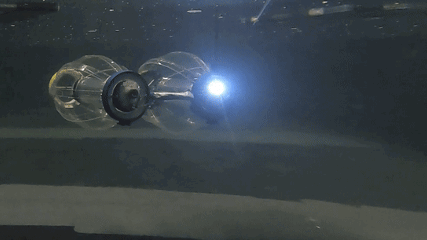
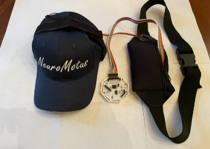
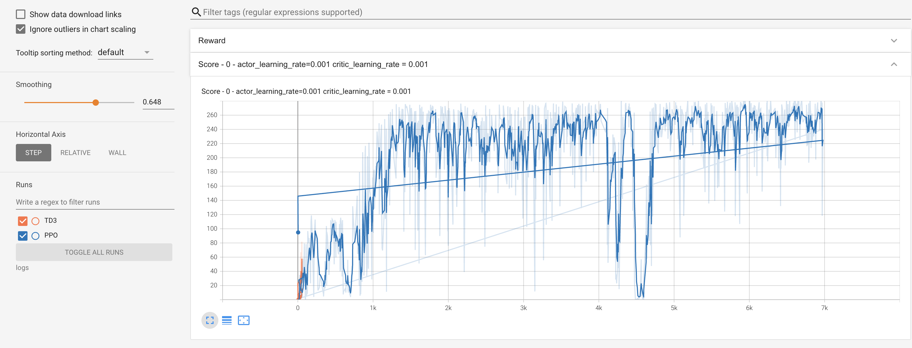

Ishan Ahluwalia
AI & Applied Mathematics · University of Pennsylvania
I build intelligent systems at the intersection of robotics and artificial intelligence. My work spans optical tactile sensing for underwater soft robots, reinforcement learning for aquatic locomotion, and brain-computer interfaces for assistive exoskeletons. I am a researcher at the GRASP Lab at Penn, advised by Prof. Cynthia Sung.
Research & Projects
Optical Tactile Sensing for Underwater Robotics
Teaching a soft underwater robot to feel using only a camera. We print a dense fractal maze pattern on a transparent elastomer skin (225 × 30 mm), mount a fisheye camera inside, and train a spatiotemporal encoder-decoder to infer contact location, indentation depth, normal force, and surface wave propagation at 30 fps — no force sensors at inference.
- Custom data rig (repurposed MakerBot) collected ∼360,000 labeled frames across 1,076 grid locations on a 2 mm × 2 mm grid
- Analytically derived labels via spatially-varying Hertzian contact mechanics + elastic surface tension; per-strip (E, γ) calibration from clamped boundary effects
- ResNet18 backbone + dense optical flow + ConvLSTM over 16-frame window; separate masked heads for static vs. dynamic (wave) estimation
- Baseline MAE: 0.52 mm contact location, 0.38 mm depth, 55 mN force — generalizes to unseen contact positions

Underwater soft robot with elastomer tactile skin
Reinforcement Learning Control for Aquatic Soft Robots
Developing RL control policies for the SLAP robot — a biologically-inspired soft limbless aquatic propulsor. Using MDP reward shaping for forward locomotion and turning behaviors, alongside DenseTact Mini 2 optical tactile sensor integration for environmental feedback and CNN-based underwater spatial localization.
- Designed MDP reward states for locomotion; tested on 2D RL simulation environment
- Installing DenseTact Mini 2 sensors on robot body for closed-loop tactile feedback
- CNN pipeline for underwater location mapping from tactile sensor streams

SLAP soft-body aquatic locomotion
2D RL algorithm demonstration
NeuroMotus: Brain-Computer Interface for Cerebral Palsy
A novel intent-based movement prediction system using EEG signals to expand exoskeleton capabilities for Cerebral Palsy patients beyond basic walking. Decodes Bereitschaftspotential signals with a custom CNN architecture and feeds predictions into a ROS-controlled limb simulator via a bidirectional neurofeedback loop.
- 94% accuracy detecting movement intent from raw EEG; 87% accuracy across 6 essential movement types
- 23.3% faster response time vs. prior systems; 2-channel OpenBCI Cyton board with custom dry electrode cap
- Bidirectional neurofeedback loop: EEG input → CNN → ROS virtual limb → visual feedback → EEG
- 2nd Place Grand Award & CIA Award, ISEF 2023

Custom EEG cap with OpenBCI Cyton board
Live demo — NWSE 2023
Robotic Door Manipulation via Deep Reinforcement Learning
DDPG actor-critic reinforcement learning system for robotic door manipulation in the RoboSuite simulation environment. Achieved near-perfect task success through reward shaping, exploration noise scheduling, and curriculum training.
- 98% task success rate on door-opening manipulation from a continuous action space
- Mean episodic return improved from 90 → 230 over 7,000 training steps
- DDPG with target network soft updates; Ornstein-Uhlenbeck exploration noise
Trained DDPG agent opening door

Episodic return over training steps
MusTENG: Wearable Triboelectric Nanogenerator for Cerebral Palsy Rehabilitation
A wearable triboelectric nanogenerator (TENG) sensor and ML pipeline for quantifying muscle spasticity in children with Cerebral Palsy. The MusTENG sensor converts microscopic muscle deformation into electrical signals; a 1D convolutional autoencoder detects anomalies from baseline and computes a custom Calculated Muscle Spasticity Score (cMSS) for three major leg muscle groups.
- Custom woven sensor (65% polyester / 100% nylon + silver conductor) fabricated and calibrated for sensitivity across 0–20 Hz muscle contractions
- 1D convolutional autoencoder (7 layers, 9,500+ parameters) with AUC-based anomaly scoring for spasticity quantification
- 91% accuracy on thigh, 84% on hamstring, 89% on calf across 170 total trials; validated across three CP gait patterns
- Closed-loop physical therapy game using live cMSS feedback for guided personalized rehabilitation
- Peer-reviewed publication, Journal of Research: High School (2022)

MusTENG sensor responding to muscle contraction
Hydroplaning Prevention via Autoencoder Tactile Sensing
Collision-prevention method using autoencoder networks paired with tactile vibration sensors to detect and predict hydroplaning onset before loss of vehicle control.
- 87% prediction accuracy for hydroplaning onset
- 2nd Place Grand Award, ISEF 2021
Experience
OS / AI Researcher
Profiled allocative slow-path bottlenecks across page compaction routines using kprobes and custom benchmarking across 127K+ lines of Linux kernel code. Designed recursive data management algorithm improving memory throughput by ~18%.
Software Engineering Intern
Built scalable web scraping pipeline generating 100K+ medical QA pairs. Integrated real-time ASR pipelines using Whisper + VOSK for patient-doctor speech transcription.
Robotics Systems Engineer Intern
Built CNN for decoding Bereitschaftspotential EEG signals achieving 23.3% faster response time for virtual hand simulations. Engineered bidirectional neurofeedback loop between EEG input and ROS-controlled limb simulator.
Software & Mechanical Engineering Intern
Developed Python-based calibration algorithms for exoskeletal prosthetics using SVD and PCA. Proposed CAD modifications to Spark prosthetic system improving energy efficiency and wearability.